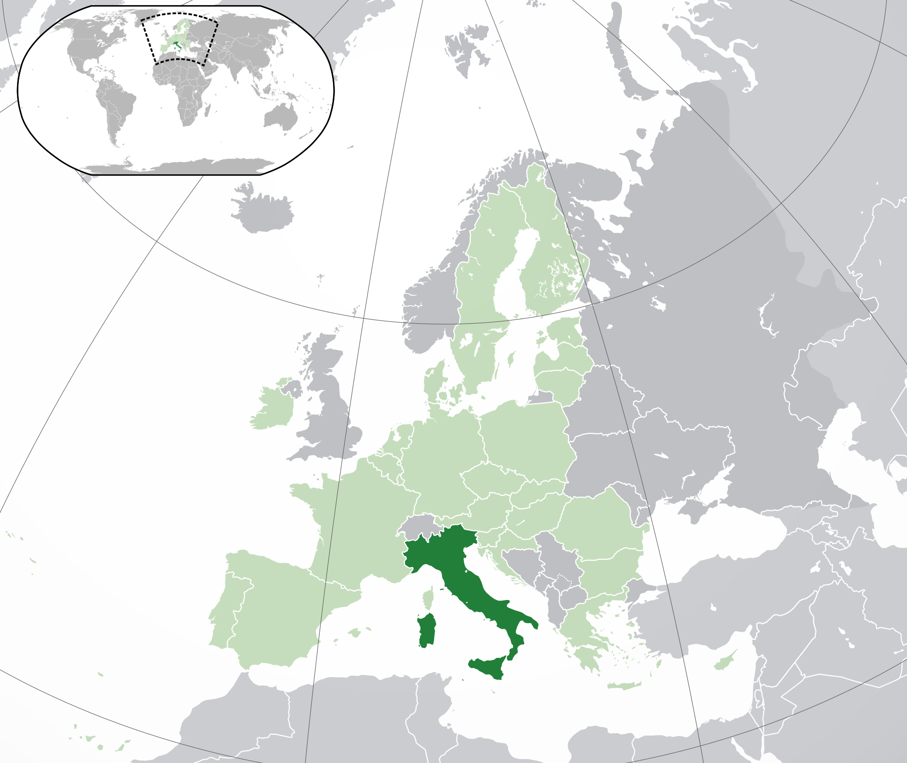

Obecné informace
Itálie, celým názvem Italská republika, dříve Vlachy (italsky Italia a Repubblica Italiana) je stát ležící v jižní Evropě na Apeninském poloostrově. Na severu hraničí s Francií (488 km), Švýcarskem (740 km), Rakouskem (430 km) a Slovinskem (232 km). Uvnitř Itálie leží dva samostatné městské státy: Vatikán (0,44 km²) a San Marino (39 km²). Itálii navíc patří území obklopené Švýcarskem zvané Campione d'Italia. Z východu Itálii omývá Jaderské moře, z jihu Jónské moře a ze západu Tyrhénské moře a Ligurské moře. Celková délka pobřeží je 7600 km. K Itálii patří dva velké ostrovy ve Středozemním moři: Sardinie a Sicílie. Hlavním městem sjednocené Itálie je od roku 1870 Řím. Itálie je členem Organizace spojených národů (OSN), Severoatlantické aliance (NATO), Rady Evropy, Evropské unie (EU), Eurozóny, Schengenského prostoru. Žije zde přibližně 60,317 milionu obyvatel.
Itálie patří do skupiny sedmi nejbohatších a nejrozvinutějších států světa (G7) a je jejím zakladatelem. Společně s Nizozemskem, Belgií, Lucemburskem, Francií a Spolkovou republikou Německo byla zakladatelským státem Evropského hospodářského společenství (EHS), což byl předchůdce EU, a Evropského společenství pro atomovou energii (Euratom).
Geografie
Pobřeží je na západě členité se zálivy, na východě ploché. Celková délka pobřeží je asi 7600 km. Povrch převážně hornatý. Dominují Západní a Východní Alpy, na severu přesahující 4000 m n. m. včetně nejvyšší hory Mont Blanc 4807 m n. m.(Monte Bianco). V nich jsou častá jezera (Gardské, Lago Maggiore, Comské jezero) vzniklá ústupem pleistocenních ledovců. Celý Apeninský a Kalabrijský poloostrov (Calabria) a největší středomořský ostrov Sicílii (Sicilia) vyplňuje pohoří Apeniny dosahující téměř 3000 m n. m. Pásmo Apenin je seismicky velmi aktivní. Častá jsou zemětřesení a erupce sopek Vesuv (Vesuvio), Etna (nejvyšší činná sopka Evropy, 3323 m n. m.) a sopek v souostroví Lipari. Hospodářsky významná je Pádská nížina v okolí řeky Pád (Po). Druhým největším ostrovem Středozemního moře je Sardinie (Sardegna).
Itálie je obklopená mořem a má poloostrovní charakter. Středozemní moře (původně Mare Nostrum, naše moře, jak mu říkali Římané) je z historických důvodů rozděleno na čtyři části: Jaderské moře, Tyrhénské moře, Jónské moře a Ligurské moře. Na západ od Sardinie se nachází Sardské moře (Mar di Sardegna) a na jih od Sicílie Sicilský kanál (Canale di Sicilia) a Maltézský kanál (Canale di Malta). Sicílii od Kalábrie odděluje Messinská úžina (Stretto di Messina) a od Afriky Sicilský kanál.
Politický systém
Parlamentní demokracie
Italská republika je parlamentní demokracií. Prezident republiky je volen nepřímo oběma komorami parlamentu. Předseda vlády a vláda jako celek se zodpovídají oběma parlamentním komorám, Poslanecké sněmovně a Senátu republiky. Nejvyšší instituce Italské republiky mají svá sídla v reprezentativních římských palácích (palazzi).
Italský prezident
Mezi pravomoci prezidenta Italské republiky patří, že může rozpustit jak horní tak dolní komoru italského parlamentu před uplynutím volebního období, pokud není žádná vláda schopna získat důvěru. Současným italským prezidentem je Sergio Mattarella. Jeho sídlem je Kvirinálský palác (Palazzo del Quirinale).
Senát republiky
Senát republiky (italsky: Senato della Repubblica) je horní komora Parlamentu Itálie (Parlamento della Repubblica Italiana). Sestává z 315 křesel pro zvolené senátory, nepočítaje doživotně jmenované politiky. 309 křesel se rozděluje podle výsledků regionálních voleb. Funkční období je pětileté. V ústavním systému Itálie je postavení Senátu rovnocenné dolní komoře, kterou je Poslanecká sněmovna, což je výjimečné v politických systémech demokratických států. Vláda musí o vyslovení důvěry požádat obě komory, jedná se o příklad tzv. dokonalého bikameralismu. Volby se do obou zastupitelských sborů uskutečňují současně. Naposledy tomu bylo 4. března 2018. Ve své současné podobě byl Senát založen 8. května 1948. Existoval však již v Italském království pod názvem Senato del Regno (Senát království). Sídlem Senátu je Palazzo Madama v Římě na Piazza Madama 11. Současnou předsedkyní Senátu je 71letá Maria Elisabetta Alberti Caselatti (Forza Italia), která byla do tohoto druhého nejvyššího úřadu v Itálii zvolena 24. března 2018. Jejím předchůdcem byl Pietro Grasso ze strany Liberi e Uguali. Předseda Senátu v případě uvolnění úřadu prezidenta republiky zastává jeho funkci.
Poslanecká sněmovna
Poslanecká sněmovna (italsky: Camera dei Deputati) je dolní komora italského parlamentu, sestávající ze 630 poslaneckých mandátů. Funkční období je pětileté. V ústavním systému země je její postavení rovnocenné s horní komorou, kterou je Senát republiky. Volby do obou zastupitelských sborů se uskutečňují současně. Naposledy tomu bylo 4. března 2018. Sídlem Sněmovny je Palazzo Montecitorio v Římě. Současným předsedou dolní komory je 43letý Roberto Fico, politik Hnutí pěti hvězd, který byl do této funkce zvolen 24. března 2018. Jeho předchůdkyní byla Laura Boldriniová ze strany Sinistra Ecologia Libertà.
Zahraniční politika
Itálie je zakládajícím členem Evropského hospodářského společenství (EEC), dnes Evropské unie (EU) a NATO. Do OSN byla Itálie přijata v roce 1955 a je členem a silným zástupcem širokého spektra mezinárodních organizací, např. Organizace pro hospodářskou spolupráci a rozvoj (OECD), Všeobecné dohody o clech a obchodu/Světové obchodní organizace (GATT/WTO), Organizace pro bezpečnost a spolupráci v Evropě (OSCE), Rady Evropy a Středoevropské iniciativy. Mezi nedávné nebo nadcházející změny v rotujícím předsednictví mezinárodních organizací patří Organizace pro bezpečnost a spolupráci v Evropě v roce 2018, G7 v roce 2017 a od července do prosince 2014 Rada EU. Itálie je také opakujícím se nestálým členem Rady bezpečnosti OSN, naposledy v roce 2017.
Itálie silně podporuje mnohostrannou mezinárodní politiku, podporuje Organizaci spojených národů a její mezinárodní bezpečnostní aktivity. K roku 2013 bylo Itálií nasazeno 5 296 vojáků v zahraničí, kteří se podíleli na 33 misích OSN a NATO ve 25 zemích světa. Itálie vyslala jednotky na podporu mírových misí OSN v Somálsku, Mosambiku a Východní Timor a poskytuje podporu operacím NATO a OSN v Bosně, Kosovu a Albánii. Od února 2003 vyslala Itálie více než 2 000 vojáků do Afghánistánu na podporu operace Trvalá svoboda (OEF).
Administrativní rozdělení
Území státu se člení na 20 krajů (regione), které představují správní jednotky nejvyšší úrovně. Ty se člení na 103 územně-správních celků druhé úrovně a dále na obce, které jsou seskupeny v oblasti pod jednu větší zvanou comune. Z toho má pět regionů autonomní status.
Územně-správními celky 2. úrovně jsou provincie, autonomní provincie, metropolitní města a volná sdružení obcí. Údolí Aosty, které má postavení autonomního regionu, vykonává zároveň správní funkce provincie. Celkem existuje 103 těchto územních celků (stav v dubnu 2019). V regionu Furlánsko-Julské Benátsko se nenacházejí žádné provincie (původní 4 byly zrušeny v roce 2017, resp. 2018), nýbrž 18 sdruženích obcí.
Demografie
S 62 miliony obyvatel, zhruba tolik jako mají Spojené království a Francie, patří Itálie k nejlidnatějším státům Evropy a je nejlidnatější z celé jižní Evropy. Itálie bývala zemí masové emigrace, ke konci dvacátého století se naopak stala jedním z vyhledávaných cílů imigrace. V procesu neregulérního zaměstnávání cizinců, které se v osmdesátých letech 20. století podle odhadů týkalo půl milionu až milionu osob, byli nejsilněji zastoupeni imigranti z Maroka a Tuniska. K nim se přidávali skupiny z bývalých italských kolonií v Africe /hlavně Somálsko a Eritrea/ i z jiných oblastí světa - od Latinské Ameriky /např. Brazílie/ až po Asii. Část imigrantů pocházela z Rumunska
Vlajka

Geografie

| Hlavní město | Řím |
|---|---|
| Rozloha | 301 338 km² |
| Nejvyšší bod | Mont Blanc |
| Časové pásmo | +1 |
Obyvatelstvo
| Počet obyvatel | 60 507 590 |
|---|---|
| Hustota | 194 ob. / km² |
| HDI | 0,881 (velmi vysoký) |
| Jazyk | italština, regionálně také němčina, francouzština, ladinština a slovinština |
| Náboženství | 83,3 % křesťané, převážně katolíci, 12,4 % bez vyznání, 3,7 muslimové, 0,2 % buddhisté, 0,1 % hinduisté, 0,3 % jiná vyznání |
Státní útvar
| Státní zřízení | parlamentní republika |
|---|---|
| Vznik | 17. března 1861 (sjednocení Itálie) |
| Prezident | Sergio Mattarella |
| Předseda vlády | Giuseppe Conte |
| Měna | euro, švýcarský frank (na území exklávy Campione d'Italia) (EUR, CHF) |
| HDP/obyv. | 36 030, USD (29. na světě, 2015) |
Mezinárodní identifikace
| ISO 3166-1: | 380 ITA IT |
|---|---|
| MPZ: | I |
| Telefonní předvolba: | +39 |
| Národní TLD: | .it |